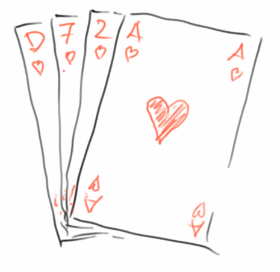
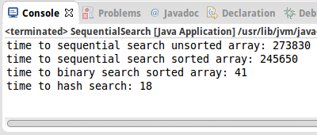

Sorting
Schon Aschenputtel wußte wie wichtig es ist schnell sortieren zu können: "die guten ins Töpfchen, die schlechten ins Kröpfchen" [7]. Und auch der damalige Präsidentschaftskandidat und spätere Präsident, Barack Obama, wusste bei einem Interview mit Google's Eric Schmidt [8], dass Bubble Sort kein besonders guter Sortieralgorithmus ist. Aber was ist denn ein guter Sortieralgorithmus? Darum geht es in diesem Kapitel: wir stellen die vier wichtigsten Sortieralgorithmen vor, und zeigen deren jeweilgen Stärken und Schwächen. Wir werden auch sehen wie man gut mischt, sozusagen das Gegenstück zum Sortieren. Und schließlich werden wir sehen welche Verbindung zwischen Suche und Sortierung besteht.
.
Shuffle
Bevor wir uns mit dem Sortieren beschäftigen können, müssen wir uns erst einmal kurz mit dem Mischen auseinandersetzen. Sonst haben wir ja nichts zum sortieren. Das richtige Mischen ist gar nicht so einfach und man muss sich da schon ein paar Gedanken machen. Gott sei Dank hat das schon jemand gemacht: die Herren Fisher und Yates [1]. Der sogenannte Fisher-Yates Algorithmus wird heutzutage am häufigsten verwendet. Sehen wir ihn uns mal an: wir wollen ein gegebenes Array von Ganzzahlen mischen:
private void shuffle(int[] arr) {
int n = arr.length;
for (int i = 0; i < n; i++) {
int j = (int)(Math.random() * n);
int tmp = arr[i];
arr[i] = arr[j];
arr[j] = tmp;
}
}
Eigentlich ganz einfach: wir gehen durch das ganze Array, beginnend mit dem ersten Element, und tauschen eines nach dem anderen mit einem anderen zufällig ausgewählten Element aus.
Eine etwas schnellere Version des gleichen Algorithmus [2] erinnert sich, dass der erste Teil des Arrays bereits gemischt ist und daher die Zufallszahl eigentlich nur aus der hinteren Hälfte kommen muss:
private static void shuffleFast(int[] arr) {
int n = arr.length;
for (int i = 0; i < n; i++) {
int j = i+ (int)(Math.random() * (n-i));
int tmp = arr[i];
arr[i] = arr[j];
arr[j] = tmp;
}
}
Diese zweite Version ist ein klein wenig schneller, aber beide Algorithmen führen das Shuffling in linearer Zeit durch, also O(n). Obwohl das Mischen wie eine triviale Übung erscheinen mag, kann überraschend viel dabei schief gehen, z.B. beim Generieren der Zufallszahlen [1].
.
Sorting
Kommen wir endlich zum Sortieren. Nehmen wir an wir haben ein Array von Ganzzahlen, das wir gerne sortiert hätten. Wie macht man das? Nun in Java ist das ganz einfach:
int[] arrOfInts = { 5, 55, 2, 7, 45, 3, 1, 8, 23, 12 };
Arrays.sort(arrOfInts);
Wir verwenden einfach die Methode sort() der Klasse Arrays, die macht das. Ganz einfach, Kapitel zu Ende.
Nun das hier wäre kein Buch über Algorithmen wenn wir nicht auch etwas über Sortieralgorthmen erfahren würden. Deswegen, was macht denn Arrays.sort() eigentlich?
.
Selection Sort
Sortieralgorithmen gibt es wie Sand am Meer, im Duzent sind sie billiger. Wir fangen aber mit dem einfachsten an, dem Selection Sort. Im Prinzip kennt jeder den Selection Sort der schon mal Karten gespielt hat: man nimmt seinen Stapel, sucht nach der kleinsten und setzt die an den Anfang. Dann sucht man nach der nächst kleinsten und setzt die daneben. Das macht man solange bis man den Stapel durch hat. Das übersetzen wir jetzt so, dass es auch der Computer kapiert:
- suche nach der kleinsten Zahl und setze sie an den Anfang;
- suche nach der nächst kleinsten und setze sie daneben;
- mach das solange bis du alle Zahlen durch hast.
In Java sieht das Ganze dann so aus:
1. public void sort(int arr[]) {
2. for (int i = 0; i < arr.length - 1; i++) {
3. int min = i;
4. for (int j = i + 1; j < arr.length; j++) {
5. if (arr[j] < arr[min]) {
6. min = j;
7. }
8. }
9. swap(arr, i, min);
10. }
11. }
Dabei tauscht die swap() Methode einfach zwei Elemente in dem Array:
private void swap(int arr[], int i, int j) {
int tmp = arr[i];
arr[i] = arr[j];
arr[j] = tmp;
}
So schwer war das gar nicht. Die Frage die uns jetzt interessiert, wie lange dauert das denn? Betrachten wir die verschiedenen Teile:
- die swap() Methode ist einfach, sie benötigt immer 3 Instruktionen;
- Zeilen 5 und 6 sind ein Vergleich und evtl. eine Zuweisung, also im Schnitt 1.5 Instruktionen;
- die innere for-Schleife, Zeilen 4 bis 8, besteht aus einem Vergleich und einem Inkrement, die bei jedem Schleifendurchlauf ausgeführt werden (2 Instruktionen), zusätzlich kommen noch die Zeilen 5 und 6 dazu. Insgesamt besteht also die innere Schleife aus 3.5 Instruktionen. Wie oft die Schleife durchlaufen wird hängt von der Größe des Arrays ab. Wenn man kurz darüber nachdenkt, dann ist das so im Schnitt n/2 mal, wobei n die Größe des Arrays ist. Das macht dann 3.5 * n/2 Instruktionen;
- die äußere Schleife besteht wieder aus einem Vergleich und einem Inkrement (2 Instruktionen), dazu kommt die Zuweisung in Zeile 3, und natürlich kommt noch die innere Schleife dazu (3.5 * n/2 Instruktionen), dann noch der Swap (3 Instruktionen), macht dann insgesamt 6 + 3.5*n/2 Instruktionen pro Durchlauf;
Da die Schleife n-mal ausgeführt wird, kommt die Summe grob auf
# of instructions = n * ( 6 + 3.5*n/2 ) = 6*n + 1.75*n² ~ n²
Was wir hier also haben, ist ein Algorithmus mit quadratischer Laufzeit, O(n²), da der n² Term zum dominanten Term für große n wird. Quadratische Laufzeit ist schlecht. Eigentlich immer wenn man zwei for-Schleifen sieht deutet das auf O(n²) hin.
.
Insertion Sort
Kommen wir zur zweiten Sortiermethode, dem Insertion Sort. Der funktioniert so: man nimmt einfach die oberste Karte vom Stapel. Dann nimmt man die nächste Karte vom Stapel, und fügt die vor die erste Karte wenn sie kleiner ist, oder hinter die erste wenn sie größer ist. Dann kommt die nächste Karte vom Stapel, und die wird dann an die richtige Stelle "einsortiert". Wir übersetzen das wieder für den Computer:
- nimm die erste Zahl vom Array, die ist sortiert;
- dann nimm die zweite Zahl, wenn die kleiner als die erste ist, setze sie davor, ansonsten dahinter;
- mach das mit den anderen Zahlen aus dem Array, eine nach der anderen, und füge sie in dem neuen Array jeweils an der richtigen Stelle ein.
Daraus wird dann der folgende Code:
1. public void sort(int arr[]) {
2. for (int i = 1; i < arr.length; i++) {
3. int cur = arr[i];
4. int j = i - 1;
5. while (j >= 0 && arr[j] > cur) {
6. arr[j + 1] = arr[j];
7. arr[j] = cur;
8. j--;
9. }
10. }
11. }
Wie schnell ist denn der Insertion Sort? Wir schauen uns die verschiedenen Teile des Codes an:
- Zeile 6 ist ein Inkrement und eine Zuweisung, also 2 Instruktionen;
- Zeilen 7 und 8 sind jeweils 1 Instruktion;
- Zeile 5 besteht aus zwei Vergleichen und einer && Operation, macht 3 Instruktionen;
- die innere while-Schleife, Zeilen 5 bis 9, wird im Schnitt n/2 mal augeführt, damit benötigt die innere Schleife 7 * n/2 Instruktionen;
- Zeile 3 ist 1 Instruktion und Zeile 4 ist 2 Instruktionen;
- Zeile 2 ist eine Instruktion und ein Vergleich, macht 2 Instruktionen.
Da die Schleife wieder n-mal ausgeführt wird, kommt das grob auf
# of instructions = n * ( 5 + 7*n/2 ) = 6*n + 3.5*n² ~ n²
Also auch der Insertion Sort hat quadratische Laufzeit, O(n²).
.
MergeSort
Bisher haben wir zwei Sortieralgorithmen gesehen, beide haben quadratische Laufzeit. Das bedeutet, wenn wir die Größe unseres Arrays verdoppeln, dann vervierfacht sich die Zeit die das dauert. Nun hat sich ein schlauer Mensch (John von Neumann) gedacht, wenn wir ein Array nehmen das nur halb so groß ist, dann würde es nur ein Viertel der Zeit dauern. Und genau das ist die Idee hinter dem Merge Sort Algorithmus:
- teile das Array in zwei Hälften;
- rekursiv, sortiere jede Hälfte;
- am Ende füge jeweils beide Hälften zusammen.
Man nennt den Merge Sort auch ’easy-split, hard-join’, denn das Aufspalten ist sehr einfach, die Arrays werden einfach halbiert. Die eigentliche Arbeit (also das Sortieren) erfolgt beim Zusammenfügen.
Schauen wir uns den Code an:
public void sort(int arr[]) {
mergeSort(arr);
}
dabei ist die mergeSort() Methode rekursiv:
1. private void mergeSort(int[] arr) { 2. if (arr.length > 1) { 3. int middle = arr.length / 2; 4. int[] left = Arrays.copyOfRange(arr, 0, middle); 5. int[] right = Arrays.copyOfRange(arr, middle, arr.length); 6. mergeSort(left); 7. mergeSort(right); 8. merge(arr, left, right); 9. } 10. }
Wie gesagt, die harte Arbeit steckt in der merge() Methode:
private void merge(int[] arr, int[] left, int[] right) {
int pos = 0;
int leftPos = 0;
int rightPos = 0;
// main merge loop
while (leftPos < left.length && rightPos < right.length) {
if (left[leftPos] < right[rightPos]) {
arr[pos] = left[leftPos];
leftPos++;
} else {
arr[pos] = right[rightPos];
rightPos++;
}
pos++;
}
// copy rest of left half, if needed
while (leftPos < left.length) {
arr[pos] = left[leftPos];
leftPos++;
pos++;
}
// copy rest of right half, if needed
while (rightPos < right.length) {
arr[pos] = right[rightPos];
rightPos++;
pos++;
}
}
Und wie lange dauert das? Das ist ein bisschen knifflig, aber fangen wir langsam an. Die Zeit, die in der Methode merge() verbracht wird, ist proportional zur Größe des Arrays. Um das zu sehen, gehen wir mal davon aus, dass die linken und rechten Arrays so sind, dass nach dem "main merge loop" beide leer sind. Dann sind die Zuweisungen in den ersten drei Zeilen 3 Instruktionen. Der innere Teil der while-Schleife ist ein Vergleich, eine Zuweisung und zwei Inkrements, d.h. 4 Befehle. Der Vergleich der while-Schleife selbst besteht aus zwei Vergleichen und einem &&, also 3 Instruktionen, also zusammen beinhaltet die while-Schleife 7 * n Instruktionen. Das bedeutet,
# of instructions for merge() = 3 + 7*n
Was bleibt ist die mergeSort() Methode: Zeile 2 ist ein Vergleich, 1 Instruktion. Zeile 3 ist eine Division und eine Zuordnung, 2 Instruktionen. Zeile 4 und 5 sind interessant: In Java müssen wir eine Kopie machen, aber in C oder C++ wäre es mit Zeiger Arithmetik einfach, ein Array zu halbieren. Da wir uns nur für den Algorithmus interessieren und nicht für Probleme die mit Java oder irgendeiner anderen Sprache zu tun haben, nehmen wir an, dass jede dieser Zeilen nur eine Instruktion ist.
Was bleibt ist der rekursive Aufruf. Das ist nicht ganz einfach, aber im letzten Kapitel hatten wir mit der powerDC() Methode ein ganz ähnliches Problem. Dort haben wir, um ein Gefühl für das Problem zu bekommen, einfach mal geschaut wie lange es dauert für verschieden große Arrays. Beginnen wir mit einem Array, das nur ein Element hat, also n=1:
- n=1: es gibt keinen rekursiven Aufruf, nur einen Vergleich in Zeile 2, also insgesamt 1 Instruktion;
- n=2: Zeilen 2 bis 5 entsprechen 5 Instruktionen, Zeilen 6 und 7 benötigen je 1 Instruktion, und der merge() in Zeile 8 entspricht 3+7*n = 17 Instruktionen, zusammen also 5+2*1+17 = 24 Instruktionen;
- n=4: hier wird n=2 zweimal rekursiv aufgerufen, macht 2*24 Instruktionen, der merge in Zeile 8 entspricht 3+7*n= 31 Instruktionen, was insgesamt zu 5+2*24+31 = 84 Instruktionen führt;
- n=8: hier wird n=4 zweimal rekursiv aufgerufen, macht 2*84 Instruktionen, der merge in Zeile 8 entspricht 3+7*n= 59 Instruktionen, was insgesamt 5+2*84+59 = 232 Instruktionen bedeutet;
- n=16: hier wird n=8 zweimal rekursiv aufgerufen, macht 2*232 Instruktionen, der merge in Zeile 8 entspricht 3+7*n= 115 Instruktionen, was insgesamt 5+2*232+115 = 584 Instruktionen bedeutet.
Wir könnten jetzt zwar so weitermachen, aber was wir haben genügt schon. Wir tragen unsere Ergebnisse mal in eine Tabelle ein, und vergleichen sie mit n, mit n*log(n) und mit n²:
| log(n) | n | n * log(n) | n² | 10* n * log(n) | merge() | 4* n² |
| 1 | 2 | 2 | 4 | 20 | 24 | 16 |
| 2 | 4 | 8 | 16 | 80 | 84 | 64 |
| 3 | 8 | 24 | 64 | 240 | 232 | 256 |
| 4 | 16 | 64 | 256 | 640 | 584 | 1024 |
| 5 | 32 | 160 | 1024 | 1600 | 1400 | 4096 |
Das ist jetzt kein exakter mathematischer Beweis, aber wenn man sich die Tabelle ansieht, dann ist ziemlich klar, dass sich merge() am ehesten wie n*log(n) verhält und nicht wie n². Man kann tatsächlich beweisen, dass das der Fall ist. Dies ist das erste Mal, dass wir auf einen Algorithmus stoßen, der ein linearithmisches Laufzeitverhalten hat, d.h. O(n*log(n)). Und das ist eine gute Sache. Merge Sort gehört auch zur Klasse der divide and conquer Algorithmen.
.
QuickSort
So wie Merge Sort ist auch Quick Sort ein divide and conquer Algorithmus. Die Grundidee ist folgende:
- teile das Array in zwei Hälften, eine mit den niedrigeren Zahlen und eine mit den höheren;
- sortiere jede Hälfte, rekursiv;
- am Ende füge die beiden Hälften einfach aneinander.
Man nennt diese Methode auch ’hard-split, easy-join’. Hier ist das Aufspalten der schwierige Teil, dafür ist das Zusammenfügen einfach. In Bezug auf den Code sieht das so aus:
public void sort(int arr[]) {
quickSort(arr);
}
wobei die quickSort() Methode rekursiv ist und sich selbst aufruft:
private void quickSort(int[] arr) { if (arr.length > 1) { int pivot = arr[arr.length / 2]; int[] low = getLowerHalf(arr, pivot); int[] high = getUpperHalf(arr, pivot); quickSort(low); quickSort(high); join(arr, low, high); } }
Wir wollen uns hier nicht mit den Details langweilen, aber man kann auch zeigen, dass Quick Sort linearithmisches Laufzeitverhalten hat. Der einfache Quick Sort hat ein paar kleine Macken, aber die kann man alle beheben.
So, nun zurück zu unserer ursprünglichen Frage: welchen Algorithmus verwendet denn Arrays.sort()? Wenn wir in der Java Dokumentation der Klasse Arrays nachschlagen, finden wir, dass ein modifizierter und optimierter Quick Sort Algorithmus verwendet wird [3].
.
Which one is the best?
Normalerweise ist ein linearithmischer Algorithmus immer besser als ein quadratischer. Aber es gibt Ausnahmen, z.B.:
- Insertion Sort ist sehr schnell, wenn die Ausgangsdaten bereits fast sortiert sind. Interessanterweise passiert das relativ häufig in der realen Welt.
- Selection Sort minimiert die Anzahl der Swaps. Also für den Fall, dass ein Swap eine sehr teure Operation ist (z.B. schwere Möbel verschieben), dann kann der Selection Sort die bessere Wahl sein.
Es gibt auch Fälle, in denen z.B. Quick Sort nicht so gut ist. Bleibt die Frage, geht es vielleicht noch schneller als linearithmisch? Die Antwort liefert die Theorie: man kann zeigen, dass es keinen Sortieralgorithmus gibt der schneller als O( n * log(n) ) ist. Das ist o.k. Wie bereits angedeutet, gibt es noch ein paar mehr Sortieralgorithmen, falls Interesse besteht kann man sich die im Internet ansehen [4], die werden auch alle mit einer schönen Animation verglichen, wirklich hübsch.
.
Review
Wir haben kurz gesehen wie man richtig mischt, danach haben wir uns aber hauptsächlich mit dem Sortieren beschäftigt. Wir haben vier Sortieralgorithmen näher kennen gelernt, and the winner is: QuickSort.
.
Projekte
In diesem Kapitel gibt es nur wenige Projekte, was nicht heißen soll, dass sie unwichtig sind. Suche ist nämlich ein sehr wichtiges Thema.
.
Searching
Suchen und Sortieren gehen Hand in Hand. Um das zu zeigen schauen wir uns mehrere verschiedene Möglichkeiten an zu suchen. Als Beispiel verwenden wir folgendes Array von Ganzzahlen:
int[] arr = { 44, 88, 17, 32, 97, 65, 28, 82, 29, 76, 54, 80 };
Darin wollen wir nach der Zahl 17 suchen, die an Position 2 ist, und nach der Zahl 42, die gar nicht in dem Array ist.
Sequential Search
Als erstes versuchen wir es mal mit der Sequential Search: das ist ein Brute-Force Algorithmus, der einfach alle Einträge des Arrays durchläuft, bis die Zahl die wir suchen, gefunden wird:
private int sequentialSearch(int key, int[] arr) {
for (int i = 0; i < arr.length; i++) {
if (arr[i] == key)
return i;
}
return -1;
}
Manchmal wird die Zahl die wir suchen, eher am Anfang des Arrays sein, manchmal eher am Ende. Im Durchschnitt müssen wir also ca. durch die Hälfte des Arrays gehen, wenn die gesuchte Zahl im Array ist, oder wenn sie gar nicht im Array ist, durch das ganze Array. Wir erwarten also ein Laufzeitverhalten, das linear zur Größe des Arrays ist, d.h. O(n).
Sequential Search2
In einem zweiten Versuch nehmen wir an, dass unser Array sortiert ist:
int[] arr = { 17, 28, 29, 32, 44, 54, 65, 76, 80, 82, 88, 97 };
Wenn wir aber kurz nachdenken, ändert das gar nichts. Das Laufzeitverhalten bleibt bei O(n).
Binary Search
Aber wir geben nicht so schnell auf: wie wäre es mit einem divide and conquer Ansatz? Angenommen, wir suchen die Zahl 17 und das Array ist sortiert. Dann folgt der Binary Search Algorithmus diesen Schritten:
- nimm die Zahl in der Mitte des Arrays (das ist die 54);
- vergleiche sie mit der gesuchten 17;
- sind die beiden gleich, sind wir fertig, wir haben die Zahl gefunden;
- ist 17 kleiner als die Mitte, dann wissen wir, dass 17 unmöglich in der rechten Hälfte des Arrays sein kann, weil es ja sortiert ist, können dort nur Zahlen größer als 54 sein. Also müssen wir für unsere weitere Suche nur in der linken Hälfte suchen. Unser Problem hat sich gerade um die Hälfte reduziert;
- jetzt gehen wir wieder zurück zum ersten Schritt, allerdings nur mit der linken Hälfte. Das machen wir so lange bis wir entweder die Zahl gefunden haben, oder bis das Array nur noch ein Element hat.
In Java sieht der Binary Search Algorithmus wie folgt aus:
private static int binarySearch(int key, int[] arr, int start, int stop) {
// base case
if (start > stop)
return -1;
// recursive case
int mid = (start + stop) / 2;
if (key == arr[mid]) {
return mid;
} else if (key < arr[mid]) {
return binarySearch(key, arr, start, mid - 1);
} else {
return binarySearch(key, arr, mid + 1, stop);
}
}
Das Laufzeitverhalten des binären Suchalgorithmus ist O(log(n)), also deutlich besser als die sequentielle Suche. Das ist einer der Gründe, warum Sortieren so wichtig ist, weil es die Suchzeiten drastisch reduzieren hilft.
Hash Search
Ist die binäre Suche wirklich die schnellste? Und ist die Sortiererei wirklich nötig? Dauert ja auch. Zweimal Nein. Das Sortieren ist nicht unbedingt nötig, und binäre Suche ist auch nicht die schnellste. Hash-based Search ist die schnellste. Wie funktioniert sie? Wir brauchen zwei Schritte: im ersten speichern wir unser Array in einem HashSet:
Integer[] arr = { 17, 28, 29, 32, 44, 54, 65, 76, 80, 82, 88, 97 };
HashSet<Integer> hs = new HashSet(Arrays.asList(arr));
und im zweiten verwenden wir einfach die contains() Methode des HashSets für die Suche:
boolean b = hs.contains(key);
Die Suche selbst hat konstantes Laufzeitverhalten, also O(1). Das ist also noch schneller als O(log(n)). Ausserdem muss unser Array nicht sortiert werden, also wir sparen uns die O(n log(n)) Strafe für das Sortieren. Aber wir müssen unser Array in das HashSet einfügen, und das kostet uns O(n). Trotzdem am Ende noch deutlich schneller!
sequential search unsorted array: 273830 ms sequential search sorted array: 245650 ms binary search sorted array: 41 ms hash search: 18 ms
Obwohl Hash-based Search doppelt so schnell wie Binäre Suche ist, macht es fast keinen Unterschied wenn man beide mit sequentieller Suche vergleicht.
Binary Search Tree
Es gibt noch eine Suchmethode, die wir in diesem Zusammenhang erwähnen wollen: der binäre Suchbaum. Wir werden sie im Kapitel über Bäume kennenlernen. Sie hat auch logarithmische Suchzeiten, d.h. O(log (n)), und hat auch noch einige andere Vorteile. Dennoch, wenn es um rohe Suchkraft geht: hash is the best!
.
TreeMap
In Kapitel drei haben wir bereits in zwei Projekten Bekanntschaft mit der TreeMap gemacht: in Languages und in BuildIndex. Das ist eine ganz normale Map bei der allerdings die Schlüssel automatisch sortiert sind. Welchen Sortieralgorithmus verwendet denn die TreeMap? Interessanterweise keinen der hier behandelten. Anstelle verwendet es einen Red-Black Tree als interne Datenstruktur, der für die Sortierung sorgt. Wir werden mehr dazu im nächsten Kapitel erfahren.
.
Research
Ein Thema das wir in diesem Buch komplett ausgelassen haben ist der Heap, auch eine interessante Datenstruktur.
.
HeapSort
Basierend auf dem Heap gibt es auch ein Sortierverfahren, den HeapSort. Wir sollten vielleicht erst mal nachlesen was denn überhaupt ein Heap ist und danach könnten wir uns mal den HeapSort näher ansehen.
.
Fragen
-
Bitte erläutern Sie, wie der SelektionSort und der InsertionSort funktionieren.
-
Wie gut ist QuickSort bei der Sortierung bereits sortierter Daten? Wie gut ist InsertionSort beim Sortieren bereits sortierter Daten?
- Sie haben eine Gruppe von Studenten, die zufällig im Wohnheim auf Zimmer verteilt wurden. Da die Zimmerhöhe aber von hinten nach vorne im Wohnheim abnimmt, wollen Sie die Räume neu zuordnen, so dass die kleineren Studenten in den hinteren Räumen sind, während die größeren in den vorderen. Jeder Student hat eine Menge persönliches Zeug zu schleppen, deswegen sollte die Anzahl der Umzüge minimiert werden. Würden Sie eher einen InsertionSort oder einen SelektionSort Algorithmus verwenden? Warum?
.
Referenzen
Zwei hervorragende Bücher wenn es um Suche geht sind das Buch von Roberts und Zelenski [5], sowie das von Sedgewick and Wayne [2]. Das Buch von Goodrich und Tamassia [6] steigt etwas tiefer in die Materie ein, ist auch sehr zu empfehlen.
[1] Fisher–Yates shuffle, https://en.wikipedia.org/wiki/Fisher–Yates_shuffle#The_modern_algorithm
[2] Introduction to Programming in Java, Robert Sedgewick and Kevin Wayne
[3] Arrays (Java Platform SE 7 ) - Oracle, https://docs.oracle.com/javase/7/docs/api/java/util/Arrays.html
[4] Sorting Algorithms Animations, http://www.sorting-algorithms.com/
[5] Programming Abstractions in C++, Eric S. Roberts and Julie Zelenski
[6] Data Structures and Algorithms in Java, M.T. Goodrich and R. Tamassia
[7] Aschenputtel, https://de.wikipedia.org/wiki/Aschenputtel_(1989)
[8] Barack Obama | Candidates at Google, https://www.youtube.com/watch?v=m4yVlPqeZwo, (about 23 minutes into the talk)
.